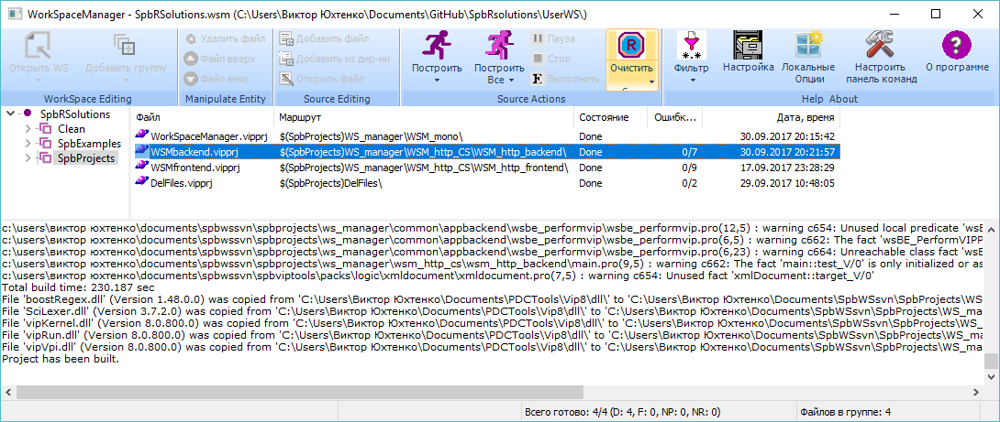
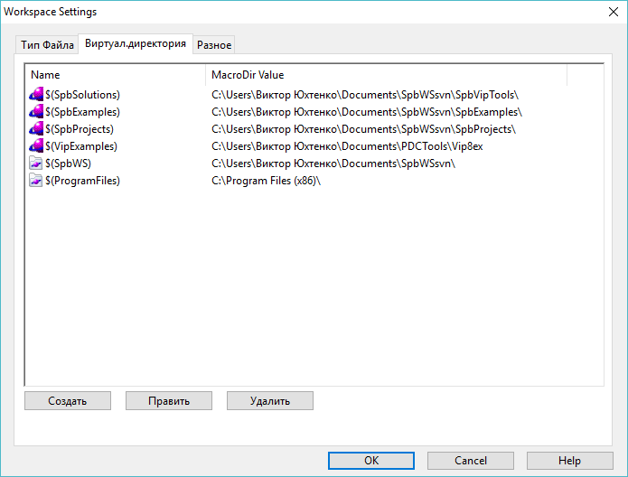

Идея разработки приложения WorkSpaceManager появилась при попытке использовать приложение SolutionManager, входящее в состав профессиональной версии Visual Prolog фирмы PDC.
Нужда в его использовании была вызвана тем, что в работе находились одновременно несколько взаимозависимых проектов, которые надо было совместно компилировать, запускать на исполнение. В особенности напрягала ситуация использования системы Visual Prolog непосредственно "из под пера" ее разработчиков, когда надо было компилировать все множество проектов (их было около 50, включая различные небольшие примеры и тесты)
Не устроили несколько моментов:
В то же время нас интересовали темы:
Поэтому в проекте WorkSpaceManager (WSM) сошлись воедино наши потребности и наши архитектурные поиски, применительно к приложениям на базе Visual Prolog.
Предполагается на этом проекте отрабатывать приемы и средства для построения полноценных микросервисов.
Проект до первой рабочей версии был разработан В. Юхтенко (Prolog Development Center SPb), позднее в работе принял участие Борис Белов. В решении задач http взаимодействия оказал помощь Андрей Басукинский.
Основной единицей обработки в WSM является файл, расширение которого определяет его тип.
Над каждым файлом могут выполняться четыре операции "Опер1", "Опер2", "Опер3" "Опер4". Характер каждой из операций, применительно к файлу определенного типа, не является строго фиксированным и определяется пользователем.
В текущей реализации этим четырем операциям присвоены следующие имена
Так, для проектного файла системы Visual Prolog, имеющего расширение .vipprj, принято, что
Для файла с любым другим расширением (другого типа) семантика операций может быть любой другой, но в общем виде каждая операция выглядит как командная строка в системе MSWindows
<исполняющая программа> <префикс> <ресурс> <суффикс>
Так для операции "Построить" проектного файла test.vipprj системы Visual Prolog это выглядит так (с точностью до маршрутов):
vipBuilder.exe /build test.vipprj
Что вызывает построение проекта test.vipprj и создание исполняемого приложения test.exe, в директории, установленной проектом.
WorkSpace (Рабочее Пространство) содержит множество файлов, актуальных для пользователя. Пользователь добавляет и удаляет файлы из рабочего пространства по мере необходимости.
WSМ позволяет структурировать множество файлов, группируя по критериям, определяемым пользователем. Структура представляется в виде дерева и не является отображением файловой системы.
Структура WorkSpace и результаты обработки файлов сохраняются в файле с расширением .wsm в формате XML.
Общий вид приложения приведен на следующем рисунке:

Основным рабочим пространоством пользователя является список файлов, расположенный в правой части формы.
Здесь указано имя файла , маршрут к нему, состояние обработки, число
ошибок и предупреждений, в ходе обработки и время последней обработки.
Предусмотрены четыре состояния результата обработки:
Дерево
ресурсов в левой части формы является логическим представлением
пользователя о своем рабочем пространстве. Первоначально дерево
содержит всего один узел - корень, и все ресурсы правой части (если они
есть) принадлежат этому узлу. Пользователь может создать произвольную древовидную структуру
В правой части формы отображаются все файлы выбранной слева группы, включая все файлы всех подгрупп и папок. Это позволяет выполнять операции либо над всеми файлами рабочего пространства, либо только над частью, находящейся в фокусе пользователя в данный момент.
Над списком ресурсов и над деревом могут выполняться операции Drag-And-Drop, что позволяет оперативно перестраивать приоритеты и стратегию обработки. Перемещения с помощью клавиатуры тоже возможно.
Пользователь может использовать как абсолютную, так и относительную адресацию файлов в дисковом пространстве. Относительная адресация аналогична принятой в системе Visual Prolog. Предварительно определяется имя виртуальной директории и это имя используется в качестве префикса в маршруте файла.
Относительная адресация позволяет переносить рабочее пространство с одного компьютера на другой, переопределив лишь расположение виртуальных директорий.
Пользователь может определить неограниченное число виртуальных директорий и редактировать их расположение на данном компьютере. Однако виртуальные директории, установленные в системе Visual Prolog не могут быть изменены средствами WSM. На следующем рисунке показан редактор виртуальных директорий.

Базовым языком интерфейса является английский, но большинство надписей формы, диалогов и сообщений может быть переназначено путем редактирования файла LanguageWSM.xml.
Переключение языка пользовательского интерфейса находится в разделе "Разное" диалога "WorkSpace Settings".Структура моно приложения приведена на следущем рисунке

Здесь синими стрелками показаны связи внутри BackEnd и FrontEnd соответственно, а красными - организация связи между BackEnd и FrontEnd.
Внутри этих структур модули получают доступ к другим модулям через BE(FE)-Connector, который обращается к регистру объектов (Entity Registry).
События, возникающие по инициативе
противоположной стороны обрабатываются модулем BE(FE) Messages, который
вызывает на исполнение соответствующие предикаты модуля BE(FE) Tasks.
Тот, в свою очередь обращается к остальным модулям BackEnd (FrontEnd).
Получив данные для противоположной стороны, модуль BE(FE)Tasks посылает
сообщение через модуль BE(FE) Event. Противоположная строна
подписывается на события источника данных для нее.
Инициатором обмена данными всегда является FrontEnd, который инициирует выполнение задач в BackEnd.
Работа происходит в асинхронном режиме: отправив запрос, FrontEnd возвращается к своей работе. BackEnd, получив запрос выполняет задачу и, возможно, инициирует передачу данных во FrontEnd. Это может быть либо одно сообщение, либо последовательность сообщений, которые должны быть обработаны во FrontEnd.
Такая структура приложения позволила практически безболезненно перейти к варианту раздельных приложений (BackEnd и FrontEnd), взаимодействующих по http- протоколу, добавив и включив в работу Http-Сервер и Http-Клиент.
Структура такого приложения приведена на следующем рисунке
Client и Server сами преобразовывают данные и организуют их передачу между BackEnd и FrontEnd.